Thrust Analysis
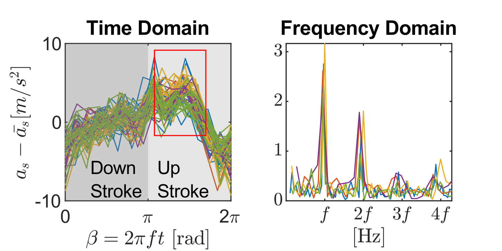
Figure 1. Measured acceleration at sensor position. Each color corresponses to a different flight test.
Wired Acceleration at Sensor aₛ
The acceleration at sensor aₛ has one wired features (Figure 1). aₛ is convex at the beginning of upstrokes. Is it the feature of flapping-wing aerodynamics? Or is it actually the feature of my measurement error? This is the key question that I try to answer in this blog.
Figure 2. Free-body diagram of ornithopter about its center of mass C
Acceleration at Center of Mass a꜀ and Acceleration at Sensor aₛ
To evaluate thrust, I need a꜀, but what I had measured is aₛ (Figure 2). Due to the flapping motion, the displacement from sensor S to the center of mass C varies with time (eq. 1).This yield a difference between a꜀ and aₛ (eq. 2)
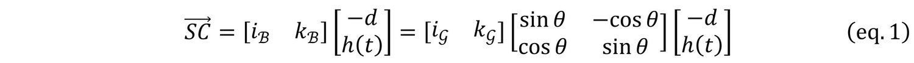
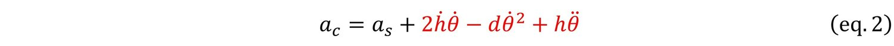
Applying point-mass Newton 2nd law to (eq. 2), I get (eq. 3)
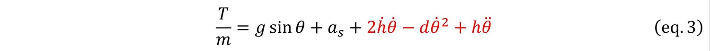
Unfortunately, my ornithopter has only measured θ and aₛ. What’s more, θ measurements are so seriously quantized that numerical differentiation becomes impractical. Thus, I cannot precisely evaluate the red term in (eq. 3).
How Significant is the Red Term?
To qualitatively analyze the significance of the red term, I approximated unknown values with sine function based on flapping phase angle β=ωt (eq. 4). As β goes from 0 to 2π, the wing flaps up and down, and the center of mass also moves up and then down. Experiment data also suggest approximating θ with sine function (Figure 3).
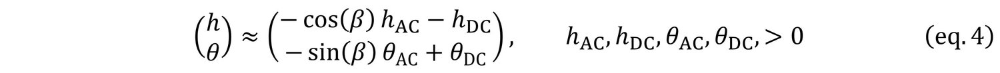
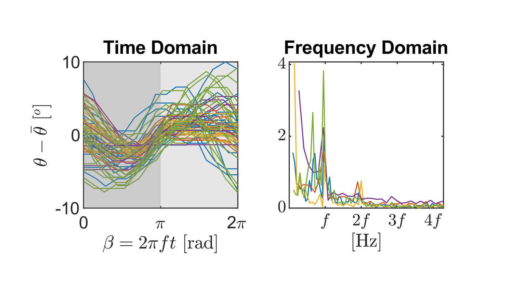
Figure 3. Flight test data for pitch angle θ is almost a sine function
The result has an interesting 2nd harmonic term (eq. 5 & 6).
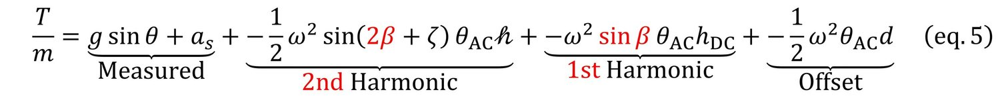
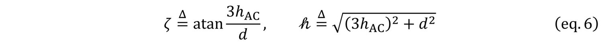
Parameter Identification
Parameter identification is done (eq. 7). Lengths come from CAD, and angles come from Fourier transformation of onboard pitch measurement (Figure 2).
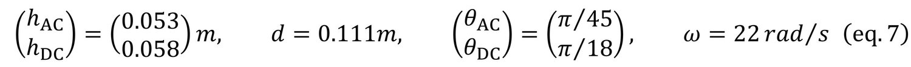
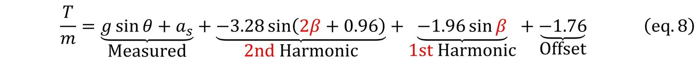
Answering Original Question
The convexity of aₛ in the red rectangle of Figure 4 may root from the negative 2nd harmonic term in (eq. 8). The measured aₛ also has a positive 2nd harmonic term. They have the same order-of-magnitude amplitude (3.28 vs [1.5,1.8]), similar phase angle (0.96 vs [0.9,1.1]), and exactly opposite sign (- vs +). Will they cancel each other so that T/m is not convex during the upstroke? Without precise measurement of a꜀, I will never know for sure.

Figure 4. Acceleration measurement at sensor position
Appendix
Draft for the analysis is attached here.